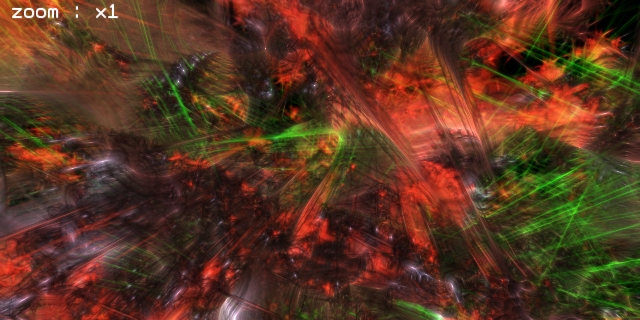

20070810 - Graphics Engine Lighting
Update 070811 : The direct links should work now! Thanks Danny for the tip that they were broken.
Normally the transparent elements of a graphics engine would be drawn as a secondary pass after all the opaque geometry. To get around having to z-sort everything, transparent effects are usually provided by additive blending, so all semi-transparent geometry tends to always blend towards some highly saturated hue or white.
However, in Atom, everything is drawn z-sorted and in back to front order, so objects can be transparency or opaque, and also can shadow, fog, and be back lit by the objects behind them. Lighting in Atom follows a similar principle. As objects are composited they can pickup the lighting from their local environment. So all objects can light all other objects. The effects are truly remarkable, and I have only just scratched the surface of what is possible.
One last video for now, this time showing off some lighting effects. Here is a preview screenshot, because the movie below is a 30MB download.

Image is Link to Movie (Plays in VLC)